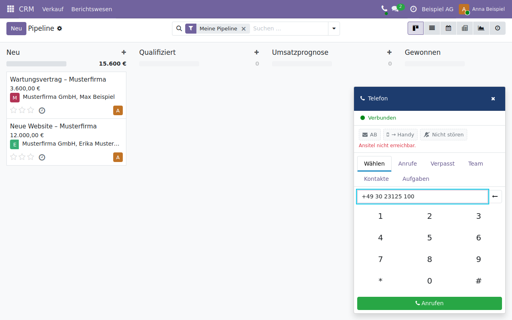
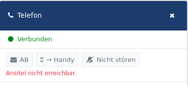

<style>
.wbv{font-family:-apple-system,"Segoe UI",Roboto,Helvetica,Arial,sans-serif;color:#1f2937;line-height:1.6;font-size:16px}
.wbv h1{font-size:2.1rem;margin:0 0 .3em;color:#1c3a6b}
.wbv h2{font-size:1.5rem;margin:1.6em 0 .5em;color:#1c3a6b;border-bottom:2px solid #e5e7eb;padding-bottom:.25em}
.wbv h3{font-size:1.15rem;margin:1.2em 0 .3em}
.wbv .lead{font-size:1.15rem;color:#374151}
.wbv ul{padding-left:1.3em}
.wbv li{margin:.25em 0}
.wbv figure{margin:1.2em 0}
.wbv figure img{max-width:100%;height:auto;border:1px solid #d1d5db;border-radius:6px;box-shadow:0 2px 8px rgba(0,0,0,.08)}
.wbv figcaption{font-size:.9rem;color:#6b7280;margin-top:.4em}
.wbv .hinweis{background:#fff7ed;border-left:4px solid #f59e0b;padding:.7em 1em;margin:1em 0}
.wbv .en{background:#f3f4f6;padding:1em 1.3em;border-radius:6px;margin-top:2em}
.wbv table{border-collapse:collapse;margin:.8em 0}
.wbv td,.wbv th{border:1px solid #d1d5db;padding:.35em .7em;text-align:left}
.wbv a{color:#1c3a6b}
</style>

<section class="wbv"><div class="oe_container"><div class="oe_row">
<h1>WB VoIP Ansitel</h1>
<p class="lead">Schnelltasten und Anrufabgleich für Ansitel-Telefonanlagen</p>
<figure><figcaption>WB VoIP Ansitel in Odoo 19</figcaption></figure>
<h2>Ihr Nutzen</h2>
<ul><li>Weiterleitung, Nicht stören und Anrufbeantworter mit einem Klick im Softphone schalten, ohne die Weboberfläche der Anlage.</li><li>Der Zustand der Anlage ist immer sichtbar, auch wenn ein Kollege oder ein Tischtelefon schaltet.</li><li>Anrufe, die auf einem anderen Gerät oder beim Kollegen angenommen wurden, stehen korrekt im Anrufprotokoll.</li></ul>
<h2>Funktionen</h2>
<ul><li><strong>Schnelltasten</strong> „→ Handy“, „Nicht stören“ und „AB“ im Softphone und/oder als schmale Rand-Leiste (je Benutzer wählbar). Anzeige des echten Zustands, Hinweis bei grauer Taste.</li><li><strong>Eigene Tasten</strong> pflegen: Art (Weiterleitung, Anrufschutz, Anrufbeantworter), Ziel (feste Nummer, eigenes Handy, interne Nebenstelle oder Rufgruppe), Reihenfolge.</li><li><strong>Gegenseitiger Ausschluss</strong>: Das Einschalten von Weiterleitung, Anrufschutz oder AB schaltet die jeweils anderen aus.</li><li><strong>Abgleich mit der Anrufliste</strong> der Anlage alle 5 Minuten: verpasste und anderswo angenommene Anrufe, auch wenn Odoo nicht geöffnet war; Anzeige des Geräts („angenommen auf Demo20“).</li><li><strong>Geräte-Tabelle</strong> mit Zuordnung der Geräte zu Benutzern; Knopf „Geräte aus Anlage laden“.</li><li><strong>Sicherheit</strong>: Token nur verschlüsselt (Fernet) und nur für Systemadministratoren sichtbar, nur https, Zeitlimit, keine Weiterleitungen, Fehler ohne Token und URL.</li><li><strong>Schutz vor Gebührenbetrug</strong>: Weiterleitungsziele werden geprüft (keine Notruf-, Auskunfts-, Sonder- und Mehrwertnummern, Ausland standardmäßig gesperrt).</li><li><strong>Verbindung testen</strong> mit einem Klick an der Anlage.</li></ul>
<h2>Screenshots</h2>
<figure><figcaption>Tastenleiste im Softphone. Abbildung ohne angeschlossene Anlage (Tasten grau)</figcaption></figure>
<figure><figcaption>Softphone mit Tastenleiste. Abbildung ohne angeschlossene Anlage (Tasten grau)</figcaption></figure>
<h2>Voraussetzungen</h2>
<ul><li>Odoo 19, Community oder Enterprise, und das Modul <strong>WB VoIP</strong>.</li><li>Eine <strong>Ansitel-Telefonanlage</strong> mit aktivierter REST-Schnittstelle (nur https) und einem Zugriffstoken; die Anlage muss WebRTC mit WSS für das Softphone bieten.</li><li>Einrichtung durch einen Systemadministrator: Schnittstelle, URL und Token an der Anlage, Nebenstelle je Benutzer, Geräte laden.</li><li>Für den Anrufbeantworter je nach Anlage ein persönlicher Token oder die Freigabe über den zentralen Token.</li><li>Lizenz: gilt über den Lizenzschlüssel von WB VoIP.</li></ul>
<h2>Datenschutz-Hinweise</h2>
<div class="hinweis"><p><strong>Vor dem Produktiveinsatz bitte lesen.</strong> Dieser Abschnitt ersetzt keine Rechtsberatung; der Betreiber ist für die datenschutzgerechte Nutzung verantwortlich.</p></div>
<ul><li>Der Odoo-Server ruft die REST-Schnittstelle Ihrer Ansitel-Anlage auf; dabei werden Rufnummern und Gerätenamen aus der Anrufliste verarbeitet. Wird die Anlage von Ansitel oder einem Dienstleister betrieben, ist dieser in der Regel Auftragsverarbeiter; prüfen Sie den Vertrag zur Auftragsverarbeitung (Art. 28 DSGVO).</li><li>Der Abgleich importiert Zeitpunkt, Dauer, Gerät und Gegennummer; Nummern ohne Kontakt werden ebenfalls gespeichert (ohne Zuordnung). Jeder Benutzer sieht nur eigene Anrufe; ein Kollege, an den ein Anruf ging, sieht nur Name, Gerät und Dauer.</li><li>Der Betreiber muss Beschäftigte über die Auswertung der Anrufliste informieren (Art. 13 DSGVO) und bei vorhandenem <strong>Betriebsrat</strong> dessen Mitbestimmung beachten (§ 87 Abs. 1 Nr. 6 BetrVG). Es gilt die Löschfrist von WB VoIP (Standard 12 Monate, Protokolle bleiben erhalten).</li><li>Zugangsdaten (Token) werden nie geloggt, nie im Bus übertragen und nie im Cache abgelegt.</li></ul>

<h2>Lizenz und Kontakt</h2>
<p>Lizenz: <strong>OPL-1</strong> (Odoo Proprietary License v1.0). Die Nutzung setzt einen <strong>Lizenzschlüssel von
WISSEN BERATUNG</strong> voraus; der Schlüssel wird über das Modul <code>wb_license_client</code> hinterlegt.
Ohne gültige Lizenz sind Anrufen und Anmelden gesperrt, vorhandene Protokolle bleiben les- und bearbeitbar.</p>
<p>Anfragen, Lizenzen und Support: <a href="https://www.wissen-beratung.de">https://www.wissen-beratung.de</a>
(WISSEN BERATUNG, Tobias Wissen).</p>

<div class="en"><h2 style="margin-top:0">In English</h2>
<p><strong>Quick keys (forwarding, do-not-disturb, answering machine) and call-list reconciliation for Ansitel PBXs, built on WB VoIP.</strong></p>
<ul><li>One-click keys in the softphone or a slim edge bar, showing the real state of the PBX.</li><li>Configurable keys, mutual exclusion of forwarding, DND and answering machine.</li><li>Five-minute reconciliation with the PBX call list: missed calls and calls answered elsewhere, with device names.</li><li>Token stored encrypted and visible to system administrators only; https only.</li></ul>
<p><strong>Requirements:</strong> Odoo 19 Community or Enterprise, WB VoIP, an Ansitel PBX with REST interface and access token. Covered by the WB VoIP licence key from WISSEN BERATUNG. User interface: German (English in preparation).</p>
<p><strong>Data protection:</strong> The Odoo server queries the PBX REST interface; phone numbers and device names are processed. If the PBX is operated by Ansitel or a service provider, that party is usually a processor; check your data processing agreement (Art. 28 GDPR). Retention and team overview notes of WB VoIP apply.</p>
<p><strong>Licence:</strong> OPL-1 (Odoo Proprietary License v1.0). A licence key from WISSEN BERATUNG is required
(entered through the <code>wb_license_client</code> module). <strong>Contact:</strong>
<a href="https://www.wissen-beratung.de">https://www.wissen-beratung.de</a>.</p>
</div>
</div></div></section>
